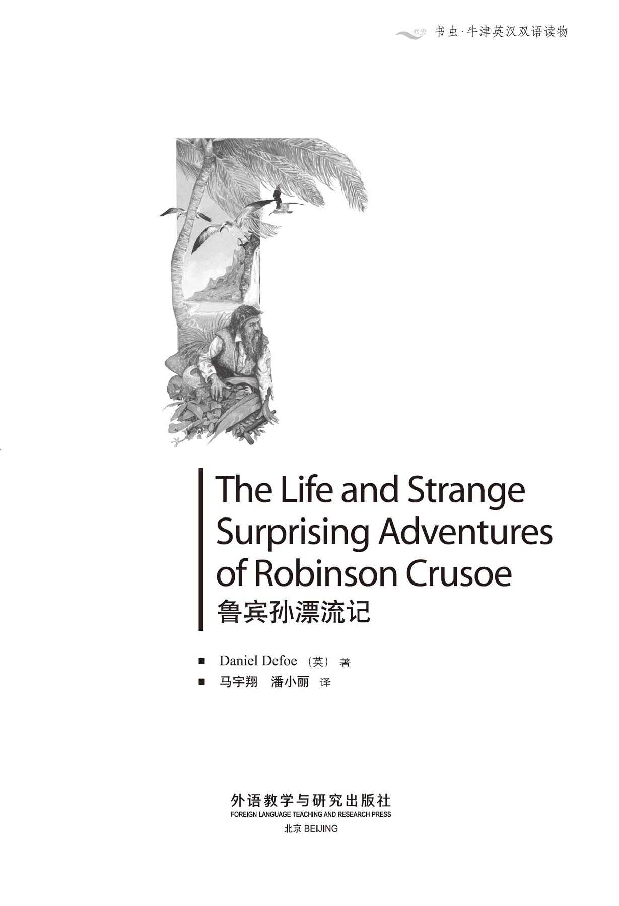
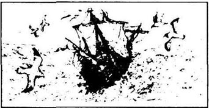
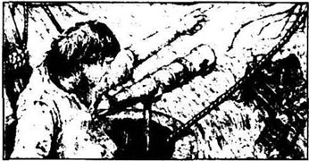
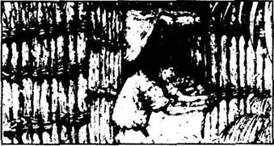
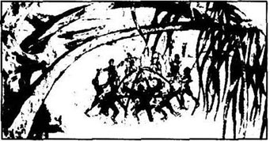
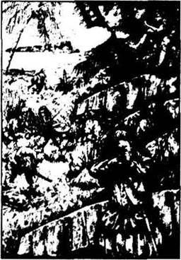
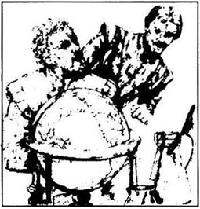
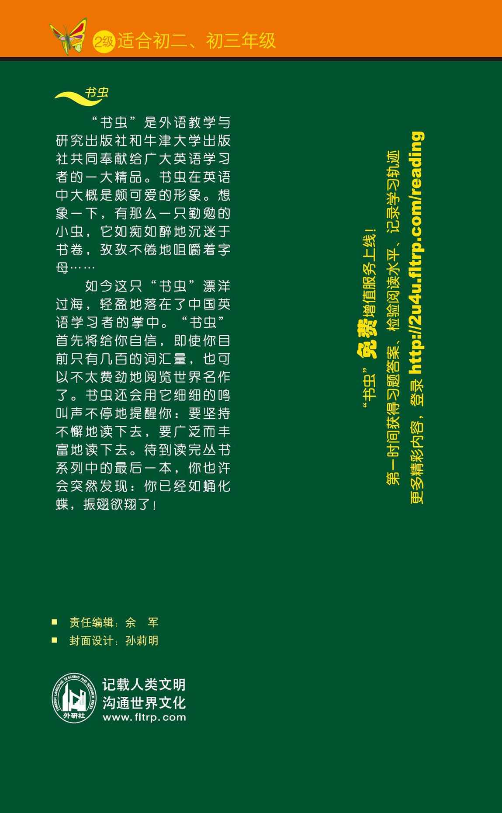

扉页

版权页
京权图字01-96-1577
Originally published by Oxford University Press, Great Clarendon Street, Oxford. © 1993
This edition is licensed for sale in the People's Republic of China only and not for export therefrom.
'Oxford' is a registered trademark of Oxford University Press.
只限中华人民共和国境内销售，不包括香港特别行政区、澳门特别行政区及台湾省。不得出口。
图书在版编（CIP）数据
鲁宾孙漂流记：英汉对照／（英）笛福（Defoe, D.）著；马宇翔，潘小丽译．—北京：外语教学与研究出版社，1997.1（2014.9 重印）
（书虫·牛津英汉双语读物）
书名原文：The Life and Strange Surprising Adventures of Robinson Crusoe
ISBN 978-7-5600-1175-2
Ⅰ．鲁… Ⅱ．①笛…②马…③潘… Ⅲ．①英语—汉语—对照读物②长篇小说—英国—近代 Ⅳ．H319.4：I
中国版本图书馆CIP数据核字（2011）第087027号
出版人： 蔡剑峰
责任编辑：余 军
封面设计：孙莉明
出版发行：外语教学与研究出版社
社 址：北京市西三环北路19号（100089）
网 址：http://www.fltrp.com
版 次：1997年1月第1版
书 号：ISBN 978-7-5600-1175-2
* * *
凡侵权、盗版书籍线索，请联系我社法律事务部
举报电话：（010）88817519 电子邮箱：banquan@fltrp.com
法律顾问：立方律师事务所 刘旭东律师
中咨律师事务所 殷 斌律师
简介
简 介
你曾长期独处过吗？你能够孤身一人在荒岛上生活多年吗？你能够给自己建造房屋，学会种植谷物并制作面包、学会用动物的皮为自己缝制衣服吗？
鲁宾孙·克鲁索厌倦了英国家里恬静的生活。他决意成为一名海员，周游世界。他有很多激动人心的冒险经历，并于1659年登上了一艘从巴西开往非洲的船。一天，来了一场可怕的风暴，轮船开始碎裂，克鲁索和他的朋友们立即为求生而与愤怒的大海抗争。所有的朋友都死了，唯有克鲁索活下来并到达了陆地。他发现自己在一个陌生、荒凉的国度——还活着，却孤独地在一个小岛上，没有食物，没有船只，无路可逃。
随后的27年他将在那儿生活……
丹尼尔·笛福生于1660年，死于1731年。他的一生惊险刺激，他曾作过记者和间谍，并由于政治性的作品而几番入狱。他一生中写了许多书，但《鲁宾孙漂流记》是他最著名的小说。
目录
1 My first sea journey
1
My first sea journey
Before I begin my story, I would like to tell you a little about myself.
I was born in the year 1632, in the city of York in the north of England. My father was German, but he came to live and work in England. Soon after that, he married my mother, who was English. Her family name was Robinson, so, when I was born, they called me Robinson, after her.
My father did well in his business and I went to a good school. He wanted me to get a good job and live a quiet, comfortable life. But I didn't want that. I wanted adventure and an exciting life.
'I want to be a sailor and go to sea,' I told my mother and father. They were very unhappy about this.
'Please don't go,' my father said. 'You won't be happy, you know. Sailors have a difficult and dangerous life.' And because I loved him, and he was unhappy, I tried to forget about the sea.
But I couldn't forget, and about a year later, I saw a friend in town. His father had a ship, and my friend said to me, 'We're sailing to London tomorrow. Why don't you come with us?'
And so, on September 1st, 1651, I went to Hull, and the next day we sailed for London.
But, a few days later, there was a strong wind. The sea was rough and dangerous, and the ship went up and down, up and down. I was very ill, and very afraid.
'Oh, I don't want to die!' I cried. 'I want to live! If I live, I'll go home and never go to sea again!'
The next day the wind dropped, and the sea was quiet and beautiful again.
'Well, Bob,' my friend laughed. 'How do you feel now? The wind wasn't too bad.'
'What!' I cried. 'It was a terrible storm.'
'Oh, that wasn't a storm,' my friend answered. 'Just a little wind. Forget it. Come and have a drink.'
After a few drinks with my friend, I felt better. I forgot about the danger and decided not to go home. I didn't want my friends and family to laugh at me!
I stayed in London for some time, but I still wanted to go to sea. So, when the captain of a ship asked me to go with him to Guinea in Africa, I agreed. And so I went to sea for the second time.
It was a good ship and everything went well at first, but I was very ill again. Then, when we were near the Canary Islands, a Turkish pirate ship came after us. They were famous thieves of the sea at that time. There was a long, hard fight, but when it finished, we and the ship were prisoners.
The Turkish captain and his men took us to Sallee in Morocco. They wanted to sell us as slaves in the markets there. But in the end the Turkish captain decided to keep me for himself, and took me home with him. This was a sudden and terrible change in my life. I was now a slave and this Turkish captain was my master.
adventure n. doing something exciting, dangerous, etc. 冒险；惊险活动。
journey n. going from one place to another. 旅行；旅 程。
sailor n. someone who helps to control a boat or ship. 船员；水手；水兵。
rough adj. not moving gently. 狂暴的。
drop v. become lower or weaker. 变弱；降低。
pirate n. someone who sails on the sea and robs other ship. 海盗。
我的第一次海上旅行
1 我的第一次海上旅行

开始我的故事之前，我想先向你谈一点我自己的情况。
我1632年出生在英国北部的约克市。我父亲是德国人，但他却来到英国居住和工作。此后不久，他与我母亲结了婚。我母亲是英国人，娘家姓鲁宾孙，因此，我出生后他们都称呼我鲁宾孙，沿用了我母亲的姓氏。
我父亲在生意上做得很出色，并且我也进了一所好学校。他希望我得到好的工作，过一种平静、舒适的生活。但是我不希望如此，我喜欢冒险和刺激的生活。
“我想成为一名水手去航行。”我告诉父母亲。他们对此很不高兴。
“不要去，”父亲说，“你知道你不会幸福的。水手过着艰苦而危险的生活。”因为我爱父亲，他不高兴，我只能尽力忘掉大海。
但我不可能忘掉，大约一年后，我在镇上遇到一个朋友。他父亲有一艘船，他对我说：“明天我们起航去伦敦。你为什么不和我们一起去呢？”
于是，1651年9月1日，我去了赫尔港，第二天我们驶向伦敦。
但是，几天后，刮起了狂风，狂暴的大海危机四伏，船不断颠簸。我晕船晕得厉害，非常害怕。
“哦，我不想死！”我哭喊起来，“我想活着！假如我活着，我就要回家，再也不出海了！”
第二天，风停了，大海又重新恢复了平静和美丽。
“好了，鲍伯，”我的朋友笑着说。“现在你感觉如何？这风并没那么厉害。”
“什么！”我大叫起来，“这可是一场可怕的风暴。”
“哦，这不算风暴，”我的朋友回答，“仅仅是小风而已。忘记它吧。来，喝一杯。”
和朋友喝了几杯之后，我感觉好多了。我忘记了危险，决定不回家了。我不愿意我的朋友和家人嘲笑我！
我在伦敦停留了一段时间，但仍然想去海上航行。所以，当一位船长要求我和他一起去非洲的几内亚时，我答应了。于是，我第二次出海了。
这是一艘很好的船，开始一切都很顺利，但是我又晕得厉害。此后，当我们接近加纳利群岛时，一艘土耳其海盗船跟上了我们。他们是当时有名的海盗。经过一场长时间的激烈交火，一切都结束时，我们连人带船都成了俘虏。
土耳其船长和他的部下把我们带到摩洛哥的萨利。他们想在那儿的市场上把我们当作奴隶卖掉。但最后土耳其船长决定把我留给他自己，带我回了他的家。
这是我人生中一次突然的可怕变故。现在我成了奴隶，这位土耳其船长成了我的主人。
2 Down the coast of Africa
2
Down the coast of Africa
For two long years I lived the life of a slave. I worked in the house and the garden, and every day I planned to escape, but it was never possible. I thought about it day and night. My master liked to go fishing in a little boat, and he always took me with him. A man called Moely, and a young boy also went with us.
One day my master said to us, 'Some of my friends want to go fishing tomorrow. Get the boat ready.'
So we put a lot of food and drink on the boat, and the next morning, we waited for my master and his friends. But when my master arrived, he was alone.
'My friends don't want to go fishing today,' he said to me. 'But you go with Moely and the boy, and catch some fish for our supper tonight.'
'Yes, master,' I answered quietly, but inside I was excited. 'Perhaps now I can escape,' I said to myself.
My master went back to his friends and we took the boat out to sea. For a time we fished quietly, and then I moved carefully behind Moely and knocked him into the water. 'Swim!' I cried. 'Swim to the shore!'
My master liked to shoot seabirds and so there were guns on the boat. Quickly, I took one of these guns. Moely was swimming after the boat and I shouted to him：
Go back to the shore! You can swim there—it's not too far. I won't hurt you, but if you come near the boat, I'll shoot you through the head!' So Moely turned, and swam back to the shore as quickly as he could.
Then I said to the boy, 'Xury, if you help me, I'll be a good friend to you. If you don't help me, I'll push you into the sea too.'
But Xury was happy to help me. 'I'll go all over the world with you,' he cried.
I wanted to sail to the Canary Islands, but I was afraid to go too far from the shore. It was only a small boat. And so we sailed on south for some days. We had very little water, and it was dangerous country here, with many wild animals. We were afraid, but we often had to go on shore to get more water. Once I used a gun to shoot a wild animal. I don't know what animal it was, but it made a good meal.
For about ten or twelve days we sailed on south, down the coast of Africa. Then one day we saw some people on the shore—strange, wild people, who did not look friendly. By now we had very little food, and We really needed help, we were afraid, but we had to go on shore.
At first, they were afraid of us, too. Perhaps white people never visited this coast. We did not speak their language, of course, so we used our hands and faces to show that we were hungry. They came with food for us, but then they moved away quickly. We carried the food to our boat, and they watched us. I tried to thank them, but I had nothing to give them.
Just then two big wild cats came down to the shore from the mountains. I think they were leopards. The people were afraid of these wild cats, and the women cried out. Quickly, I took a gun, and shot one of the animals. The second wild cat ran back up into the mountains.
Guns were new to these African people, and they were afraid of the loud noise and the smoke. But they were happy about the dead wild cat. I gave them the meat of the dead animal, and they gave us more food and water.
We now had a lot of food and water, and we sailed on. Eleven days later we came near the Cape Verde Islands. We could see them, but we couldn't get near because there was no wind. We waited.
Suddenly Xury called to me, 'Look, a ship!'
He was right! We called and shouted and sailed our little boat as fast as we could. But the ship did not see us. Then I remembered the guns which made a lot of smoke. A few minutes later the ship saw us and turned.
When we were on the ship, the Portuguese captain listened to my story. He was going to Brazil and agreed to help me, but he wanted nothing for his help. 'No,' he said, when I tried to pay him. 'Perhaps, one day, someone will help me when I need it.'
But he gave me money for my boat, and for Xury, too. At first, I did not want to sell Xury as a slave, after all our dangerous adventures together. But Xury was happy to go to the captain, and the captain was a good man. 'In ten years' time,' he said, 'Xury can go free.'
When we arrived in Brazil three weeks later, I said goodbye to the captain and Xury, left the ship, and went to begin a new life.
escape v. get free from something or someone. 逃跑；逃脱。
perhaps adv. maybe; possibly. 也许；可能。
shore n. ground next to the sea. 岸。
animal n. any living thing that is not an insect, plant, fish, or person. 动物。
coast n. land by the sea. 海岸；海滨（地区）。
leopards n. big, wild animal with yellow fur and dark spots. 豹。
南下非洲海岸
2 南下非洲海岸

漫长的两年时间里，我过着奴隶的生活。我在屋子里、花园里干活，每天都计划着逃跑，但一直没能成功。我日夜思考着逃跑的事。我的主人喜欢乘小船去钓鱼，而且总是带上我，一个名叫莫雷的男人及一个小男孩也总跟随着我们。
一天主人对我们说：“我有些朋友明天想去钓鱼，把船准备好。”
于是，我们把很多食物和饮料搬到了船上，在第二天早上，我们等候着主人和他的朋友，但主人来时却是他独自一人。
“我的朋友今天不想去钓鱼了，”他对我说，“但你和莫雷及这孩子去为我们今天的晚餐捕些鱼来。”
“是，主人。”我平静地回答，但我内心很激动，心想，“也许这回我可以逃脱了。”
主人回到他的朋友们那儿去了，我们坐船出了海。静静地钓了一阵鱼，然后我小心翼翼地移到莫雷的身后把他推到了海里。“游回去，”我大声喊着，“朝岸上游！”
我的主人喜欢打海鸟，所以有几只枪在船上。我迅速地抓过一支枪，莫雷正跟在船后面游，我朝他叫道：
“回到岸上去！你可以游到那儿，这儿离海岸不太远。我不会伤害你，但如果你靠近这只船，我就会打穿你的脑袋！”于是，莫雷转过身尽他最快的速度游回岸上去了。
然后，我对这小孩说：“苏里，如果你帮我，我会是你的好朋友，如果你不帮我，我同样会把你丢到海里去。”
但苏里很乐意帮助我。“我愿意跟着你走遍世界。”他大声说。
我想驶向加纳利岛，但是不敢远离海岸，这只是一只小船。因此我们向南航行了几天，我们只有很少的水，这儿是危险的国度，有许多野生动物。我们害怕，但是我们常常不得不上岸去取水，有一次我用枪射死了一只野兽，我不知道这是什么动物，但它成了一顿美餐。
沿着非洲海岸我们朝南航行了大约10天至12天，随后一天我们看到岸上有些人——怪模怪样的野人，他们看起来并不友善。那时我们的食物已经很少了，我们实在需要帮助，虽然害怕，但我们不得不上岸。
开始，他们也害怕我们，或许白人从没有访问过这海岸。当然，我们不会说他们的语言，我们只好用手势和面部表情来表明我们很饿。他们把食物给我们，随即迅速地离开。我们把食物搬上船，他们瞧着我们。我试图感谢他们，却又没有什么东西可以送给他们。
正在这时候，两只大野猫从山上窜到海边来，我想它们是豹子。那些人害怕这些野猫，妇女们尖叫起来。很快地，我拿起一枝枪，击中了其中一只野兽。另外一只跑回了山里。
枪对这些非洲居民来说很新奇，他们害怕这轰响的声音与烟雾。但他们对死的野猫很感兴趣。我送给他们这只死兽的肉，他们给了我们更多的食物和水。
现在我们有了很多的食物和水，我们继续航行。11天后我们接近佛得角群岛。我们可以看见它们，但由于没有风我们不能靠近。我们等候着。
突然，苏里对我叫着：“看哪，一只船！”
他是对的！我们叫喊着并且尽可能快地划着小船。但是那只船并没看到我们。这时我想起枪可以产生很多烟雾。几分钟后那只船看到了我们并且转了过来。
等我们上了他们的船，葡萄牙船长倾听了我的故事。他正要去巴西并且答应帮助我，但他对我的帮助不要任何报偿。当我试图付钱给他时，他说：“不，也许有一天，当我需要帮助时，有人也会帮助我。”
但是他却付钱买下我的船，也买下了苏里。起初，我不愿意把苏里卖作奴隶，毕竟我们一起经历了危险的旅程。但苏里很乐意跟随船长，这位船长是一个好人。“十年后，”他说，“苏里将会获得自由。”
三星期后我们抵达巴西，我告别了船长和苏里，离开了这艘轮船，继续开始一段新的生活。
3 The storm and the shipwreck
3
The storm and the shipwreck
I stayed in Brazil and worked hard for some years. By then I was rich... but also bored. One day some friends came to me and said, 'We're going to Africa to do business. Why don't you come with us? We'll all be rich after this journey!'
How stupid I was! I had an easy, comfortable life in Brazil, but, of course, I agreed. And so, in 1659,I went to sea again.
At first, all went well, but then there was a terrible storm. For twelve days the wind and the rain didn't stop. We lost three men in the sea, and soon the ship had holes in its sides. 'We're all going to die this time,'I said to myself. Then one morning one of the sailors saw land, but the next minute our ship hit some sand just under the sea. The ship could not move and we were really in danger now. The sea was trying to break the ship into pieces, and we had very little time. Quickly, we put a boat into the sea and got off the ship. But the sea was very rough and our little boat could not live for long in that wild water.
Half an hour later the angry sea turned our boat over and we were all in the water. I looked round for my friends, but I could see nobody. I was alone.
That day I was lucky, and the sea carried me to the shore. I could not see the land, only mountains of water all around me. Then, suddenly, I felt the ground under my feet. Another mountain of water came, pushed me up the beach, and I fell on the wet sand.
At first I was very thankful to be alive. Slowly, I got to my feet and went higher up the shore. From there, I looked out to sea. I could see our ship, but it was wrecked and there was nobody near it. There was nobody in the water. All my friends were dead. I was alive, but in a strange wild country, with no food, no water, and no gun.
It was dark now and I was tired. I was afraid to sleep on the shore. Perhaps there were wild animals there. So I went up into a tree and I stayed there all night.
shipwreck n. accident when a ship breaks up in a storm or on the rocks. 船只失事。
stupid adj. foolish; with very slow thinking. 愚蠢的；愚笨的。
beach n. flat strip of sand or stones beside the sea. 海滩。
wreck v. to destroy. 毁坏；弄坏。
风暴与海难
3 风暴与海难

我留在巴西苦干了几年，不久我就有了一笔钱……但我又感到了厌倦。一天，一些朋友来看我并对我说：“我们将要去非洲做生意。为什么你不和我们一起去呢？这次航行后我们都会发财的！”
我当时是多么地傻啊！我在巴西已有了轻松、舒适的生活，然而我又同意了。于是，在1659年，我又一次出海了。
最初，一帆风顺，但不久就来了一场可怕的风暴。狂风暴雨持续了12天没有停息。我们在海上失去了三个同伴，而且没多久，船舷上就出现了漏洞。“这回我们都活不成了。”我自言自语。一天早上，一个水手看见了陆地，但紧接着我们的船就触到了海底的沙滩，船没法移动，我们此刻真正地陷入了危险之中。海浪似乎极力地想把船击成碎片，我们的时间不多了。我们迅速地把小艇放到海里，离开了船。但大海太粗暴了，我们的小船在这样的大浪中根本没法长时间航行。
半个小时后，愤怒的大海掀翻了我们的小船，我们全都落到了水里。我四处张望寻找我的伙伴，但却看不到一个人。只剩我一人了。
那天，我是幸运的，海水把我送到了岸边。我没法看见陆地，我的四周只有山一样高的巨浪。突然间我触到了脚下的陆地。又一排巨浪盖过来，把我推上了沙滩，我跌倒在湿湿的沙地上。
最初，我非常庆幸我还活着。慢慢地我站起来，走到高处的岸上。在那儿，我眺望大海，能看见我们的船，但它已倾覆了。船的附近没有一个人，水中也没有人。我的伙伴们都死了。我活着，但却在一个陌生、荒凉的国度，没有食物，没有水，没有枪。
此刻，天黑了，我很累，又不敢睡在岸上，也许这儿有野兽，于是我只好爬到一棵树上过了一夜。
4 A new life on an island
4
A new life on an island
When day came, the sea was quiet again. I looked for our ship and, to my surprise, it was still there and still in one piece. I think I can swim to it, I said to myself. So I walked down to the sea and before long, I was at the ship and was swimming round it. But how could I get on to it? In the end, I got in through a hole in the side, but it wasn't easy.
There was a lot of water in the ship, but the sand under the sea was still holding the ship in one place. The back of the ship was high out of the water, and I was very thankful for this because all the ship's food was there. I was very hungry so I began to eat something at once. Then I decided to take some of it back to the shore with me. But how could I get it there?
I looked around the ship, and after a few minutes, I found some long pieces of wood. I tied them together with rope. Then I got the things that I wanted from the ship. There was a big box of food—rice, and salted meat, and hard ship's bread. I also took many strong knives and other tools, the ship's sails and ropes, paper, pens, books, and seven guns. Now I needed a little sail from the ship, and then I was ready. Slowly and carefully, I went back to the shore. It was difficult to stop my things from falling into the sea, but in the end I got everything on to the shore.
Now I needed somewhere to keep my things.
There were some hills around me, so I decided to build myself a little house on one of them. I walked to the top of the highest hill and looked down, I was very unhappy, because I saw then that I was on an island. There were two smaller islands a few miles away, and after that, only the sea. Just the sea, for mile after mile after mile.
After a time, I found a little cave in the side of a hill. In front of it, there was a good place to make a home. So, I used the ship's sails, rope, and pieces of wood, and after a lot of hard work I had a very fine tent. The cave at the back of my tent was a good place to keep my food, and so I called it my 'kitchen' . That night, I went to sleep in my new home.
The next day I thought about the possible dangers on the island .Were there wild animals, and perhaps wild people too, on my island? I didn't know, but I was very afraid. So I decided to build a very strong fence. I cut down young trees and put them in the ground, in a half circle around the front of my tent. I used many of the ship's ropes too, and in the end my fence was as strong as a stone wall. Nobody could get over it, through it, or round it.
Making tents and building fences is hard work. I needed many tools to help me. So I decided to go back to the ship again, and get some more things.
I went back twelve times, but soon after my twelfth visit there was another terrible storm. The next morning, when I looked out to sea, there was no ship.
When I saw that, I was very unhappy. 'Why am I alive, and why are all my friends dead?' I asked myself. 'What will happen to me now, alone on this island without friends? How can I ever escape from it?'
Then I told myself that I was lucky—lucky to be alive, lucky to have food and tools, lucky to be young and strong. But I knew that my island was somewhere off the coast of South America. Ships did not often come down this coast, and I said to myself, 'I'm going to be on this island for a long time.' So, on a long piece of wood, I cut these words:
I CAME HERE ON 30TH SEPTEMBER 1659
After that, I decided to make a cut for each day.
rope n. very thick, strong string. 绳；索。
salt v. to add salt to; put salt on. 加盐。
cave n. a deep natural hollow place either underground, or in the side of a hill. 洞；穴；岩洞。
tent n. a movable shelter made of cloth supported by poles and ropes. 帐篷。
fence n. a wall made of wood or wire, dividing two areas of land. 篱笆；栅栏。
cut n. the result of cutting. 刻痕。
孤岛上的新生活
4 孤岛上的新生活

当白天到来时，大海又恢复了平静。我寻找我们的船，令我惊诧的是它依然在那儿并且没有破碎。“我想我能够游到那儿。”我自言自语。于是，我朝大海里走去，不一会儿，我就靠近了船绕着它游。只是，我怎样才可以上去呢？最后，我从船舷一侧的一个洞里钻了进去，但却很不容易。
船里积了很多水，但海底的沙使船固定在了一个地方。船的尾部翘出了水面，这让我非常庆幸，因为船上全部的食物都储在那儿。我已经很饿了，所以我马上吃起来。之后我决定带一些食物回到岸上。可是我又该怎么做呢？
我察看了这只船的四周，几分钟后，我找到了几块长条的木板。我用绳子把它们紧扎在一起，然后向上搬我想从船上带走的东西。那儿有一大箱食物——米、咸肉和硬面包。我还拿了很多坚固的刀及其他工具，船帆、绳子、纸、钢笔、书及7支枪。现在我需要在船上找一个小帆，不一会儿，我就准备好了。我慢慢地、小心翼翼地向岸边划，要使我的东西不掉到海里是挺困难的，但最终我把每一件东西都弄上了岸。
现在，我需要地方来存放我的东西。
在我的周围有些小山丘，于是我决定在其中的一个小山上给自己建一座小屋。我走到最高的小山的山顶往下看，非常沮丧，因为那时我才明白我是在一个孤岛上。几英里外有两个更小的岛，更远的地方，只剩下了大海，延绵数英里的大海。
过了不久，我在小山的一侧找到了一个小洞穴。在它前面，是一个安家的好地方。于是，我用那些船帆、绳子及木板，经过一番很艰苦的劳作后，为自己搭建了一个非常好的帐篷。帐篷后面的洞穴是存放食物的好地方，所以我称之为我的“厨房”。那天晚上，我便在我的新家度过了。
第二天，我仔细设想了岛上可能存在的危险。在我的岛上，会不会有野兽，也许还会存在野人？虽然我不知道，但却很害怕。于是我决定建一个坚固的栅栏。我砍倒了一些小树，插到地上，并在我的帐篷前围成个半圆。我还用上了很多船上的绳子，最后我的栅栏就像一堵坚固的石墙。没有人可以翻进来、钻进来或者绕过来。
制作帐篷和建造栅栏篱笆是一项艰苦的工作。我需要很多工具的帮助。所以，我打算再次回到船上，去拿更多的东西。
我回去了12次，但就在我第12次回来之后不久又来了一场暴风雨。第二天一早我向大海眺望时，船不见了。
目睹这一切，我非常悲伤。“为什么我活着，而我所有的朋友们却都死了？”我问自己，“现在对于我又会有什么事情发生呢？没有朋友，独自生活在岛上，我怎么才能逃离这儿呢？”
但随即我告诉自己我是幸运的——能幸运地活下来，幸运地获得食物、工具，幸运自己还年轻力壮。但我知道我的小岛在远离南美海岸的某个地方。船只不太经常沿着这个海岸航行，我对自己说：“我会在这个岛上待很长时间。”于是，在一长条木牌上，我刻下了这些话：
我于1659年9月30日来到此岛
以后，我决定每天都刻上一个记号。
5 Learning to live alone
5
Learning to live alone
I still needed a lot of things. 'Well,' I said, 'I'm going to have to make them.' So, every day, I worked.
First of all, I wanted to make my cave bigger. I carried out stone from the cave, and after many days' hard work I had a large cave in the side of the hill. Then I needed a table and a chair, and that was my next job. I had to work on them for a long time. I also wanted to make places to put all my food, and all my tools and guns. But every time I wanted a piece of wood, I had to cut down a tree. It was long, slow, difficult work, and during the next months I learnt to be very clever with my tools. There was no hurry. I had all the time in the world.
I also went out every day, and I always had my gun with me. Sometimes I killed a wild animal, and then I had meat to eat.
But when it got dark, I had to go to bed because I had no light. I couldn't read or write because I couldn't see. For a long time, I didn't know what to do. But in the end, I learnt how to use the fat of dead animals to make a light.
The weather on my island was usually very hot, and there were often storms and heavy rain. The next June, it rained all the time, and I couldn't go out very often. I was also ill for some weeks, but slowly, I got better. When I was stronger, I began to go out again. The first time I killed a wild animal, and the second time I caught a big turtle.
I was on the island for ten months before I visited other parts of it. During those months I worked hard on my cave and my house and my fence. Now I was ready to find out more about the rest of the island.
First, I walked along the side of a little river. There, I found open ground without trees. Later, I came to more trees with many different fruits. I decided to take a lot of the fruit, and to put it to dry in the sun for a time. Then I could keep it for many months.
That night I went to sleep in a tree for the second time, and the next day I went on with my journey. Soon I came to an opening in the hills. In front of me, everything was green, and there were flowers everywhere. There were also a lot of different birds and animals. I saw that my house was on the worst side of the island. But I didn't want to move from there. It was my home now. I stayed away for three days, and then I came home. But I often went back to the other, greener side of the island.
And so my life went on. Every month I learnt to do or to make something new. But I had troubles and accidents too. Once there was a terrible storm with very heavy rain. The roof of my cave fell in, and nearly killed me! I had to build it up again with many pieces of wood.
I had a lot of food now. I cooked it over a fire or dried it in the sun. So I always had meat during the rainy months when I could not go out with a gun. I learnt to make pots to keep my food in. But I wanted very much to make a harder, stronger pot—a pot that would not break in a fire. I tried many times, but I could not do it. Then one day I was lucky. I made some new pots and put them in a very hot fire. They changed colour, but did not break. I left them there for many hours, and when they were cold again, I found that they were hard and strong. That night I was very happy. I had hot water for the first time on the island.
By then, I also had my own bread. That was luck, too. One day I found a little bag. We used it on the ship, to keep the chickens' food in. There was still some of the food in the bag, and I dropped some of it onto the ground. A month later I saw something bright green there, and after six months I had a very small field of corn. I was very excited. Perhaps now I could make my own bread!
It was easy to say, but not so easy to do. It is a lot of work to make bread from corn. Many people eat bread, but how many people can take corn from a field and make bread out of it without help? I had to learn and to make many new things, and it was a year before I cooked and ate my first bread.
During all this time I never stopped thinking about escape. When I travelled across to the other side of the island, I could see the other islands, and I said to myself, 'Perhaps I can get there with a boat. Perhaps I can get back to England one day.'
So I decided to make myself a boat. I cut down a big tree, and then began to make a long hole in it. It was hard work, but about six months later, I had a very fine canoe. Next, I had to get it down to the sea. How stupid I was! Why didn't I think before I began work? Of course, the canoe was too heavy. I couldn't move it! I pulled and pushed and tried everything, but it didn't move. I was very unhappy for a long time after that.
That happened in my fourth year on the island. In my sixth year I did make myself a smaller canoe, but I did not try to escape in it. The boat was too small for a long journey, and I did not want to die at sea. The island was my home now, not my prison, and I was just happy to be alive. A year or two later, I made myself a second canoe on the other side of the island. I also built myself a second house there, and so I had two homes.
My life was still busy from morning to night. There were always things to do or to make. I learnt to make new clothes for myself from the skins of dead animals. They looked very strange, it is true, but they kept me dry in the rain.
I kept food and tools at both my houses, and also wild goats. There were many goats on the island, and I made fields with high fences to keep them in. They learnt to take food from me, and soon I had goat's milk to drink every day. I also worked hard in my cornfields. And so many years went by.
clever adj. quick, skillful. 熟练的。
fat n. the material under the skins of animals and human beings which helps to keep them warm.（动物与人体的）脂肪。
turtle n. an animal that lives esp. in water, with a soft body covered by a hard horny shell. 海龟；甲龟。
fruit n. the part of a tree or bush that contains seeds, esp. considered as food. 水果；果类。
rainy adj. having a lot of rain. 多雨的。
pot n. a round vessel of baked clay. 罐子。
corn n. any of various types of grain plants. 谷物。
canoe n. a long light narrow boat. 小划子；独木舟。
skin n. the natural outer covering of an animal or human body, from which hair may grow. 皮；皮肤。
goat n. a four-legged animal related to the sheep, which has horns. 山羊。
学会独自生活
5 学会独自生活

我仍需要很多东西。“好吧，”我说，“我以后不得不自己做了。”于是，我每天都工作着。
首先，我把我的山洞扩大。我从洞里运出石头，经过许多天的艰苦劳动，我在小山的一侧开了个大的山洞。然后，我需要一张桌子和一把椅子，这便是我接下来的工作。为此，我不得不长时间地干。我还想要一些地方存放我的食物，以及我全部的工具和枪支。每一次我需要一块木板时都不得不砍倒一棵树。这是一项漫长艰苦的工作，在随后的几个月里我学会熟练地使用工具了。无须焦急，我拥有整个世界的全部时间。
我依然每天出去，而且总是随身带枪。有时我杀死一只野兽，然后，就可以有肉吃了。
但每到天黑，因为没有灯，我就只好睡觉。由于看不见我不能读书也没法写字，好长一段时间我不知道该怎么做。但最终我学会了如何使用死兽的脂肪来点灯。
岛上的天气通常很热，经常有暴风雨。第二年的六月一直在下雨，我不能经常外出。我也病了几个星期，但慢慢地我好转了。当我强壮起来时，我又开始外出。第一次我杀了一只野兽，第二回我捕获了一只大海龟。
当我去参观岛的其他地方时，我在岛上已有10个月了，在这期间，我为我的洞穴、房子和篱笆忙活，现在我可以进一步了解该岛其他地方的情况了。
首先，我沿着一条小河岸前行。在那，我发现一片没有树木的开阔地。随后，我到达了一片结着各种水果的树林。我决定多摘些果子把它们在太阳下放一阵晒干，这样就可以保存很多个月了。
那个晚上，我第二次睡在了树上，第二天又继续我的旅行。不久，我到了这个小山的开阔地。在我面前，一片郁郁葱葱，鲜花遍野。还有很多各种各样的鸟类和动物。我明白了我的房子是在这个岛的最糟的一侧但我并不打算从那儿移走，那是我的家。我在外待了三天，然后回了家。但我经常回到岛上这边绿色的一侧。
我的生活继续着。每个月我都学会做点新的东西。但也有麻烦和灾祸。一次一场夹着大雨的风暴来临，我的山洞的顶层塌了下来，差点要了我的命！我不得不用很多木头把它重新建好。
现在，我有了很多食物。我把它们架在火上烤或搁在太阳下晒干。因此，即使在雨季我不能带枪外出时也总有肉吃了。我学会做陶罐存放我的食物。但我非常想要做一个更坚固的罐子——一个放在火里不会破裂的罐子。我试了很多次，可我没有成功。但有一天我的运气来了。我做了几个新的罐子把它们搁在旺火里。它们变了颜色但却没有碎裂。我把它们放在那儿好几个小时，当它们再次冷却下来时，我发现它们既坚硬又牢固。那个晚上，我非常高兴。在这岛上我第一次喝到了热水。
从那时起，我也有了自己的面包。这也是一件幸运的事。一天我找到一只小袋子。在船上时我们用它来存放小鸡的饲料。在那袋子里还一直放着些食物，我把它们全倒在了地上。一个月后，我看见一些亮绿的幼苗，六个月后我便有了一块非常小的庄稼地。我很激动。或许现在我可以做自己的面包了。
这些事说起来容易做起来却很困难。从谷物到面包需要很多工作。很多人吃面包，但又有多少人可以无须帮助从地里收割谷物又做成面包呢？我不得不学着去做而且去做很多新的东西，在我烧出并吃到我做的第一个面包时又一年过去了。
在这期间，我从来没有停止设法逃离小岛。当我探索小岛的另外一侧时，我能看到其他的小岛，我对自己说：“或许我用一只小船可以到达那儿。也许，有一天我便可以回到英格兰了。”
于是，我决定造自己的小船。我砍倒了一棵大树，然后开始掏成一个长条形洞。这是很苦的工作，但六个月后，我就有了一只很好的独木舟。接下去，我必须让它下水。我是多么地愚蠢啊！为什么开始工作前却没想到呢？毫无疑问，这只独木舟太重了。我移不动它！我又拉又推用尽一切方法，但它却纹丝不动。这以后很长一段日子我都不开心。
造船是发生在我到岛上之后的第四个年头。在我的第六年里我又造了一只更小的船，但我没有试图用它来逃离小岛。要想长途航行，这船太小了，我可不想死在海上。现在这岛便是我的家并非我的监狱，我很高兴我还活着。一年或两年后，我在岛的另一侧又造了一只独木舟。我还在那儿建了第二座房子，所以我有了两个家。
我的生活总是从早忙到晚，总是有很多事情要做。我学会用兽皮给自己做新衣服，虽然看起来挺古怪，这是事实。但在雨季它能使我不被淋湿。
我在我的两所房子里都储放了食物和工具，也都养了野山羊。在这个岛上有很多野山羊，我用高栅栏圈了块地把它们围在里面。它们学会了从我这儿找食物，于是不久，我就每天有羊奶喝了。我同时还在我的地里辛苦耕种。于是，很多年就这样过去了。
6 A footprint
6
A footprint
Then, one year, something strange and terrible happened. I often walked along the shore, and one day I saw something in the sand. I went over to look at it more carefully, and stopped in sudden surprise.
It was a footprint—the footprint of a man!
Who could this be? Afraid, I looked around me. I listened. I waited. Nothing. I was more and more afraid. Perhaps this man was one of those wild people who killed and ate other men! I looked everywhere, but there was nobody, and no other footprint. I turned and hurried home. 'There's someone on my island, 'I said to myself. 'Perhaps he knows about me... Perhaps he's watching me now from behind a tree... Perhaps he wants to kill me.'
That night I couldn't sleep. The next day I got all my guns ready and I put more wood and young trees around my house. Nobody could see me now. But, after fifteen years alone on the island, I was afraid, and I did not leave my cave for three days.
In the end, I had to go out to milk my goats. But for two years I was afraid. I stayed near my home and I never used my guns because I didn't want to make a noise. I could not forget the footprint, but I saw and heard nothing more, and slowly I began to feel happier.
One day, a year later, I was over on the west side of the island. From there I could see the other islands, and I could also see a boat, far out to sea. 'If you have a boat,' I thought, 'it's easy to sail across to this island. Perhaps that explains the footprint—it was a visitor from one of the other islands.'
I began to move more freely around the island again, and built myself a third house. It was a very secret place in a cave. 'No wild man will ever find that,' I said to myself.
Then one year something happened which I can never forget. I was again on the west side of the island and was walking along the shore. Suddenly, I saw something which made me feel ill. There were heads, arms, feet, and other pieces of men's bodies everywhere. For a minute, I couldn't think, and then I understood. Sometimes there were fights between the wild men on the other islands. Then they came here to my island with their prisoners, to kill them, cook them, and eat them. Slowly, I went home, but I was very angry. How could men do this?
For many months I watched carefully for the smoke from fires, but I didn't see anything. Somehow the wild men came and went, and I never saw them. I was angry and afraid. I wanted to shoot them all, but there were many of them and only one of me. 'Perhaps I can shoot two or three,' I said to myself, 'but then they will kill and eat me.'
Then, one morning in my twenty-third year on the island, I was out in my fields and I saw the smoke from a fire. Quickly, I went up the hill to watch.
There were nine men around the fire, and they were cooking their terrible food. Then these wild men danced round the fire, singing and shouting. This went on for about two hours, and then they got into their boats and sailed away. I went down to the shore and saw the blood of the dead men on the sand. 'The next time they come, I'm going to kill them,' I said angrily.
foot print n. a foot-shaped mark made by pressing a foot onto a surface. 脚印。
explain v. show, tell, etc. what something means. 解释；说明。
secret adj. that other people do not know. 秘密的；暗藏的。
一个脚印
6 一个脚印

有一年，发生了一件古怪而且可怕的事情。我经常沿着海岸走，一天我看见沙滩上有些东西。我跑过去想瞧个仔细，但却在震惊中停了下来。
那是一个脚印——一个人的脚印！
这是谁的呢？我害怕极了，环顾四周，我倾听着、等候着，却什么也没有，我越来越怕。也许，这是一个杀死并吃掉其他人的野人！我到处看，但一个人也没有，也没有别的脚印。我转过身匆忙赶回家。“岛上有人，”我自言自语，“也许他知道我……也许他现在正从树后面观察我……也许他想杀了我。”
那一夜我不能入睡。第二天我把所有的枪备好并在房子的周围堆上更多的木头和小树。现在没有人能够看见我。可是，岛上独自生活了十五年后，我还是害怕，以至于一连三天没离开过我的山洞。
最终，我还是不得不出去给我的山羊挤奶，但两年里我一直提心吊胆。我待在房子的附近，从来不使用我的枪因为我不想弄出声音。我忘不掉那个脚印，但由于再也没有听到其他什么，渐渐地，我的感觉开始好起来。
一年以后的一天，我来到小岛的西侧，从那儿我能看到其他岛和远处大海中的船。“如果有一只船，”我想，“穿过海面来到这个岛是挺容易，也许，这样可以解释这脚印——是一个来自其他岛的来访者。”
我又开始在岛上自由自在地走动并给自己建了第三所房子。它是在一个山洞里非常隐蔽的地方。“没有野人能够找到它。”我对自己说。
然而有一年，发生了一件事，令我永远不能忘记。我又一次在岛的西侧沿着海岸散步。突然，我瞧见令我作呕的东西，那儿到处是人头、手臂、脚和一些人体其他部位的碎块。那一刻，我简直无法思考，随即，我就明白了。有时其他岛上的野人之间会发生战争，然后他们带着他们的俘虏来到了我的岛上，杀了俘虏，接着烹了吃掉。慢慢地，我走回家中，可我很愤怒，人怎么能够做这样的事？
几个月来，我仔细观察火堆升起的烟，但我什么也没看见。究竟野人如何来来去去我却从来没有发现过。我又愤怒又害怕。我想把他们全都杀了，但他们人多而我就一个人。“也许，我可以杀死两、三个，”我自言自语，“可是，然后他们却会杀了我并把我吃掉。”
此后，正是我在岛上的第23个年头的一个早上，我正在我的地里劳作，看见一堆火上升起的烟，飞快地，我爬上山去观察。
有9个人围绕着火堆，正在烤着可怕的食物。接着那些野人围绕着火堆跳起了舞，唱着叫着。这样整整持续了两个小时，然后他们上了小船离开了。我走到海滩上，目睹了沙滩上死人的淋漓鲜血。“下次他们来，我一定会杀了他们，”我愤怒地说。
7 Man Friday
7
Man Friday
For two years I never went anywhere without my gun. I felt lonely and afraid, and had many sleepless nights. One night there was a very bad storm, and I thought I heard the sound of guns out at sea. The next morning I looked out, and saw a ship. It was lying on its side not far from the shore. Quickly, I put my little boat in the water and sailed out to it.
There were two dead men on the ship, but no one alive. The bodies of the other sailors were lost in the sea. I took some clothes and tools, and also a box of Spanish gold and silver money. I was a rich man now, but what use was money to me? I could not buy anything with it.
I wanted people, a friend, somebody to talk to ... somebody who could help me escape from my island. One morning I woke up and made a plan. 'I'll try to catch one of the prisoners of the wild men,' I said to myself. 'He'll be happy to be alive and perhaps he'll help me to escape.' I watched day and night, but for a year and a half there were no boats.
Then one day five boats came. There were about thirty men and they had two prisoners. They made their fire on the sand and danced round it. Then they killed one of the prisoners and began to cook their terrible meal. The second prisoner waited under the trees, with two men to watch him. Suddenly, the prisoner turned and ran. The two men ran after him, but the other wild men were busy round the fire and did not see what was happening.
The prisoner ran like a wild goat, and soon I saw that he was coming near the bottom of my hill. As fast as I could, I ran down the hill and jumped out of the trees between the prisoner and the two wild men. I hit the first man with the wooden end of my gun and he fell down, but I had to shoot the second man. The poor prisoner did not move. He was afraid of the noise of my gun.
I called to him and tried to show him that I was friendly. Slowly, he moved nearer to me, but just then the first wild man began to get up from the ground. Then the prisoner spoke and I understood that he wanted my sword. How happy I was to hear words again! I gave him my sword, and at once he cut off the head of his enemy.
Hurriedly, we hid the dead bodies under some leaves, and then left quickly. I took my prisoner to my secret cave on the other side of the island and gave him food and drink. After that, he went to sleep.
He was a fine young man, about twenty-five years old, tall and well-built, with a kind face and a nice smile. He had a brown skin, black hair, bright eyes and strong white teeth. I decided to give him the name of 'Man Friday', because I first saw him on a Friday.
When he woke up in the morning, he ran out to me. I was milking my goats in the field, and he got down on the ground and put his head near my foot. I understood that he was thanking me, and I tried to show him that I was his friend.
I began to teach him to speak English, and soon he could say his name, 'Master', and 'Yes' and 'No' . How good it was to hear a man, s voice again!
Later that day we went back to my first house. We went carefully along the beach, but there were no boats and no wild men. Just blood and bones all over the sand. I felt ill, but Friday wanted to eat the pieces of men's bodies which were still on the ground. I showed him that this was terrible for me, and he understood.
When we got to my house, I gave Man Friday some trousers, and I made him a coat and a hat. He liked his new clothes very much. Then I made him a little tent to sleep in, but for a few weeks I always took my gun to bed with me. Perhaps Friday was still a wild man and would try to kill me in the night. At first, Friday was very afraid of my gun. Sometimes he talked to it, and asked it not to kill him.
Friday was a quick learner and his English got better day by day. He helped me with the goats and with the work in the cornfields, and soon we were good friends. I enjoyed teaching him and, most of all, having a friend to talk to. This was the happiest of all my years on the island.
Friday and I lived together happily for three years. I told him the story of my adventures and about life in England, and he told me about his country and his people. One day we were at the top of the highest hill on the island, and we were looking out to sea. It was a very clear day and we could see a long way. Suddenly, Friday began to jump up and down, very excited.
'What's the matter?' I said.
'Look, Master, look!' Friday cried. 'I can see my country. Look over there!'
I looked, and there to the north-west, between the sea and the sky, was a long thin piece of land. I learnt later that it was the island of Trinidad, and that my island was in the mouth of the River Orinoco on the north coast of South America.
I began to think again about escape. Perhaps Friday wanted to go home too. Perhaps together we could get to his country. But what then? Would Friday still be my friend, or would his people kill me and eat me?
I took Friday to the other side of the island and showed him my big canoe. It still lay under the trees. It was very old now, and there were holes in the wood.
'Could a boat like this sail to your country, Friday?' I asked him.
'Oh yes,' he answered. 'A boat like this can carry a lot of food and drink.'
'Then we'll make another canoe like it, and you can go home in it,' I said.
But Friday looked very unhappy. 'Why are you angry with me?' he asked. 'What have I done? Why do you want to send me home?'
'But I thought you wanted to go home,' I said.
'Yes. But you must come with me. Kill me if you want, but don't send me away from you!'
Then I saw that Friday was a true friend, and so I agreed to go with him. We began work on the canoe at once. Friday chose the tree himself—he understood wood better than I did—and we cut it down. We worked hard and in a month the boat was finished. Two weeks later it was in the sea, and we began to get ready for our long journey.
sleepless adj. not able to sleep. 不眠的。
hit v. knock someone or something hard. 打；打击。
sword n. very long，sharp knife for fighting. 剑；刀。
hide v. put something in asecret place. 隐藏；把……藏起来。
voice n. sound that you make when you speak or sing. 说话声；嗓子。
mouth n. end of a river, where it comes to the sea. 河口。
send v. make someone go somewhere. 打发 ；派遣。
true adj. fainthful; real. 忠诚的。
星期五
7 星期五

两年来，我无论去哪都带着枪。我感到孤独和害怕，许多晚上无法入睡。一个晚上来了一场非常厉害的风暴。我想我听到了海上的枪声。第二天早晨我往外望去，看到一只轮船斜躺在离海岸不远的海面上。我迅速地把我的小船拖下水并朝大船驶去。
船上有两个死人，但没有人活着，其他水手的尸体都消失在海上。我带走一些衣服和工具，还有一箱西班牙金币和银币，现在我成了一个富翁，但这些钱对我有什么用呢？我用它们什么也买不到。
我渴望人类，一个朋友，一个可以谈话的人……可以帮助我逃离孤岛的人。有天早上我醒来做了个计划。“我要试着搭救一个野人的俘虏，”我自言自语，“他将因为活着而高兴，可能他会帮助我逃跑。”我日夜观望着，但一年半过去了，却再也没见到船只出现。
有一天，海上来了五只船，大约有30个人和两个俘虏。他们在沙滩上生火并围着火跳舞，然后他们杀了一个俘虏并开始烤可怕的食物。另一个俘虏在树下等候，留有两个人看守。突然，俘虏转身就跑，那两个人在后面追赶，但其余的野人围着火忙着，并没有看见发生的事。
那俘虏像一只野山羊在奔跑，不一会儿我看到他已跑到我的山脚下。我尽快地跑下山去，在俘虏和另两个野人之间的树丛里跳出来。我用木制的枪柄击倒第一个野人，但我却不得不开枪打死第二个。可怜的俘虏没有动，他被枪声吓呆了。
我大声招呼他，努力向他表明我是友好的。他慢慢地向我靠近，但这时第一个野人开始从地上爬起来。然后这俘虏说话了，我明白他需要我的刀。能够听到人的语言我是多么高兴啊！我给他我的刀，他立刻砍掉了敌人的脑袋。
我们急忙把尸体藏到落叶下面，然后迅速离开。我把俘虏带到岛的另一面我隐蔽的洞穴，并给他食物和水，不久，他睡着了。
他是一个可爱的年轻人，大约25岁，身材高大健壮，憨厚的脸上带着善意的微笑。他生着褐色皮肤、黑头发、明亮的眼睛和坚固的白牙齿。我决定叫他“仆人星期五”，因为我是在星期五第一次见到他的。
他早上醒来，跑到我的身边。我正在田里挤羊奶，他跪在地上把头贴在我的脚边。我明白他在感谢我，我努力向他表明我是他的朋友。
我开始教他说英语，不久，他能够说他的名字、“主人”及“是”与“不是”。重新听到人的声音是多么美妙啊！
那天傍晚，我们回到我第一次建造的房子，我们沿着海滨小心地走着，但那儿没有船和野人，只有血迹和尸骨散落在沙滩上，我感到恶心，但星期五想吃地上的尸体碎块，我向他表示这对我来说很可怕，他明白了。
当我们回到房子里，我给了星期五几条裤子，而且给他做了件外套和一顶帽子，他非常喜欢他的新衣服。然后我给他搭了一座小帐篷睡觉，但一连几个星期我总是带着枪睡觉，或许因为星期五还是一个野人，也许他会在夜里杀了我。开始，星期五害怕我的枪，有时他对枪说话，叫枪不要杀死他。
星期五学得很快，他的英语讲得一天比一天好。他帮我养山羊和在田地里干活，不久我们成了好朋友。我乐于教他，最重要的是有一个朋友可以谈话，这是我在岛上最快乐的一段时光。
我和星期五一起幸福地生活了三年，我告诉他我的冒险经历和在英国的生活，他告诉我有关他的国家及人民。一天，我们站在岛上最高的山顶眺望大海，天气十分晴朗，我们可以看得很远。突然，星期五跳上跳下，非常兴奋。
“发生了什么事？”我说。
“看，主人，看哪！”星期五叫起来。“我能看见我的国家。看，就在那儿。”
我看到从这儿往西北，在海天之间，有一片狭长的土地。我后来知道这是特立尼达岛，而我的岛在南美洲北部海岸的奥里诺科河的河口。
我又重新开始考虑逃离。也许星期五也想回家，或许我们能一起回到他的国家。但那会怎样呢？星期五仍会是我的朋友吗？他的伙伴会杀死并吃掉我吗？
我把星期五带到岛的另一边，向他展示我的庞大的独木舟。它仍躺在树下。现在它已经很旧了，木头上出现了一些洞。
“星期五，像这样的船能驶到你的国家吗？”我问他。
“哦，能，”他回答说。“像这样的船能装运许多食物和水。”
“那么我们将制造差不多的另一只独木舟，你就可以乘着它回家了。”我说。
但星期五看起来很不开心。“你为什么生我的气呢？”他问，“我做了什么？为什么你想送我回家？”
“但我以为你想回家。”我说道。
“是的。但你一定要和我一起去。假如你想杀我也可以，但不要把我送走！”
此后我发现星期五是一个真诚的朋友，因此我同意和他一起走。我们马上开始建造独木舟。星期五亲自挑选木头——他比我更懂得木材的好坏——我们砍倒树木，辛苦地工作，一个月就把船造好了。两个星期后船下水了，我们开始为长途旅行作准备。
8 Escape from the island
8
Escape from the island
I was now in my twenty-seventh year on the island, and I did not want to be there for another year. We worked hard to get the corn in, and to make a lot of bread. We had dried fruit and salted meat, and big pots to keep water in. One evening Friday went out to look for a turtle for meat and eggs. But in less than an hour he was back, and he looked very afraid.
'Master! Master!' he cried. 'There's a great ship near the island, and men are coming to the shore in a boat!'
I jumped up and ran with him down to the shore. To my great surprise, I saw that it was an English ship! But why was it here? English ships never came this way. Perhaps they were pirates! 'Don't let them see you, Friday!' I called. 'We'll hide in the trees and watch.'
There were eleven men in the boat, but three of them were prisoners. Their arms were tied with rope, but their legs were free and they could walk. The other sailors pushed the three prisoners up the beach, laughing and shouting and hitting them. Then some of them sat down on the sand and began to drink. Others walked away to look at the island, and two men stayed to watch the boat. The three prisoners walked slowly along the beach and sat down under a tree, not far from us. They looked very unhappy.
Very quietly, I came up behind them through the trees, and called out to them in English.
'Don't be afraid,'I said. 'I'm an Englishman. Perhaps I can help you.'
The three men turned and looked at me. They did not answer at once; they were too surprised. Perhaps they thought I was a wild man myself, in my strange home—made clothes of animals' skins, and with my long hair and beard. Then the oldest man spoke.
'I am the captain of that ship,' he said, 'and these two men are my first and second officers. Last night there was a mutiny, and the seamen took the ship from me. Now they're going to leave the three of us here, to die on this island.'
'Do these mutineers have guns?'
'Only two,' he answered, 'and they've left those on the boat.'
'All right,' I said. 'We'll fight them, but if we get your ship back for you, you must take me back to England.'
The captain agreed immediately and thanked me very warmly for my help. Friday ran back to my house to get all the guns, and the captain and I made a plan.
The first part was easy because the seamen were not ready for a fight. We shot the two men at the boat, and the captain shot another man. This man, Tom Smith, was the worst of them all and he began the mutiny on the ship. Then the captain talked to the other five men, and they agreed to help him. They did not really want to be mutineers, but they were afraid of Tom Smith.
'Now,' I said to the captain, 'we must get back your ship. How many men are on it?'
'Twenty-six,' the captain replied, 'and they will fight hard because they won't want to go home. It is death for all mutineers in England. But not all the men are bad. I'm sure that some of them will help me.'
Just then we saw another boat, which was coming from the ship to the shore. There were ten men in it, and they all had guns. We ran into the trees and waited.
It was a long hard fight, but by now it was dark and this helped us very much. We ran here and there in the trees, calling and shouting. The seamen could not see us and did not know how many men they were fighting. In the end the first officer shouted to them:
'Put down your guns and stop fighting! The captain has fifty island people to help him. We can kill you all!'
So the seamen stopped fighting and we took their guns. Three of the men agreed to come back to the captain, and we put the others in my cave. Friday and I stayed to watch the prisoners, while the captain and his men went back to fight for the ship.
All night we listened to the sound of guns and shouting, but in the morning, when the sun came up, the captain was master of his ship again. I went down to the shore to meet him.
'My dear friend,' he cried, 'There's your ship! I'll take you to the ends of the world in it!'
I put my arms round him, and we laughed and cried together. How happy I was to leave the island!
My good friend Friday came with me, of course, but we left the mutineers on the island. We decided not to kill them ; they could begin a new life on the island. I showed them my three houses, my cornfields and my goats, and all my tools. Their life would be easy because of all my hard work for so many years.
And so, on the nineteenth of December 1686—after twenty-seven years, two months and nineteen days—I said goodbye to my island and sailed home to England.
shout v. cry words out loudly and strongly. 呼喊；叫喊。
mutiny n. time when soldies or sailors attack their own leaders and officers. 兵变。mutineer 反叛者；叛变者。
reply v. answer. 回答；答复。
decide v. come to an idea or plan after thinking. 决定。
逃离孤岛
8 逃离孤岛

现在我在这岛上已经待了27年，我不愿再待下去了。我们勤劳地工作，收割谷物，制成许多面包。我们准备了干果、咸肉和装水的大罐子。一天傍晚，星期五为了寻找肉和蛋去抓海龟。但不到一个钟头他就回来了。他看起来非常害怕。
“主人！主人！”他叫喊着，“在岛的附近有一只大船，他们坐着一条小船上岸来了！”
我跳起来跟他一起下山朝岸边跑。令我非常惊奇的是，我看到那是一艘英国船！但为什么会在这儿？英国船只从不朝这个方向来。或许他们是海盗！“别让他们看见你，星期五！”我叫到。“我们躲到树后瞧着。”
船上有11个人，但其中3个是俘虏。他们的手臂用绳子捆着，但他们的脚是自由的，可以走路。其他水手把这3个俘虏押到海滩上，笑着，叫着并踢他们。一些人坐在沙滩上开始喝酒。其他人走开去观察小岛，留下两个人看守小船。3个俘虏沿着海滩走得很慢，在离我们不远的树下坐了下来。他们显得非常沮丧。
我悄悄地穿过树丛走到他们后面，用英语招呼他们。
“不要害怕，”我说。“我是英国人。或许我能帮助你们。”
这3个人转过身来看着我。他们没有马上回答；他们很惊讶。可能会认为我这个穿着用动物皮毛自制的古怪衣服，长长的头发和胡须的人是个野人。稍后，最年长的人说话了。
“我是船长，”他说，“这两个是我的大副和二副。昨晚发生了一场叛乱，水手夺走了我的船。现在他们将把我们3人丢在这儿，让我们死在岛上。”
“这些反叛者有枪吗？”
“只有两支枪，”他回答，“他们把枪留在小船上了。”
“好的，”我说，“我们来打他们，但是如果我们为你夺回了船，你们必须带我回英国去。”
船长立即同意并热情地感谢我的帮助。星期五跑回房子取来所有的枪，船长和我制定了一个计划。
第一步还是容易的，因为水手没有作战的准备。我们开枪打死了船上的两个人，船长击毙了另一个。这个叫汤姆·史密斯的，是其中最坏的一个。他发动了船上的这场叛乱。然后船长和其他五个人谈话，他们答应帮助船长。他们并非真的想成为反叛者，只是畏惧汤姆·史密斯。
“现在，”我对船长说，“我们必须回到你的船上。船上有多少人？”
“26个，”船长回答，“他们会顽强抵抗，因为他们不想回家。在英国所有的反叛者都会处以死刑。但并非所有的人都是坏人，我相信有一些人会帮助我的。”
这时我们看见另一只小船，正离开大船向岸边驶来。船上有10个人，他们都带了枪。我们跑进树丛等着。
这是一场艰苦的持久战，但此刻天已黑了，这对我们很有利。我们在树丛里到处跑，叫喊着。水手们着不见我们，也不知道和他们打仗的有多少人。最后，大副朝他们喊：
“放下武器。停止战斗！船长得到了50名岛上居民的帮助，我们能把你们全部消灭！”
因此水手们停止了作战，我们缴了他们的枪。其中3个人同意回到船长这边，我们把其余的人送进我的山洞里。我和星期五留下看守俘虏，而船长和他的手下回去为夺船而战斗。
整夜我们听见枪声及叫喊声，但到了早晨，当太阳升起时，船长又成了大船的主人。我下山到海岸边去迎接他。
“我亲爱的朋友，”他喊道。“那是你的船！我会用它把你载到世界的每个角落！”
我拥抱他，我们一起又笑又叫。离开这个小岛我是多么高兴啊！
我的好朋友星期五当然跟随着我，但我们把那些叛乱者留在了岛上。我们决定不杀他们；他们能够在岛上开始一种新的生活。我给他们看了我的三间房子，我的庄稼地和我的山羊以及所有的工具。由于我多年的艰苦劳动他们的生活会轻松得多。
于是，在1686年12月19日——经过了27年2个月19天——我告别了我的小岛乘船返回了英国。
9 Home in England
9
Home in England
When I came back to England, I felt like a stranger in the country. Many things were different, and not many people remembered me. I went home to York, but my father and mother were dead, and also my two brothers. I did find the two sons of one of my brothers. They were happy to learn that I was alive, and I was pleased to find some family.
After some months I decided to go down to Lisbon in Portugal. I had friends there who could help me to sell my land in Brazil, and I needed the money. Friday came with me. He was always a good and true friend to me. In Lisbon I found the Portuguese captain, who took me in his ship to Brazil, all those years ago. It was good to see him again, and he helped me with my business. Soon I was ready to go home again—by land. No more adventures and dangers by sea for me!
It was a long, hard journey. We had to cross the mountains between Spain and France in winter, and the snow was deep. Poor Friday was very afraid of the snow. In his country it was always hot, and he did not like cold weather.
Back in England I found a house and began to live a quiet life. My two nephews came to live with me. The younger one wanted to be a sailor, and so I found him a place on a ship. After a while I married, and had three children, two sons and a daughter. Then my wife died, and my nephew, who was now the captain of a ship, came home to see me. He knew that I did not really like a quiet life.
'I have a fine ship, uncle,' he said. 'I'm going out to the East Indies—India, Malaya, the Philippines... Why don't you come with me?'
And so, in 1694，I went to sea again, and had many more adventures. Perhaps one day I'll write another book about them.
danger n. chance that something harmful will happen. 危险。
nephew n. son of your brother or sister. 侄子；外甥。
quiet adj. peaceful; with no trouble. 和平的；宁静的。
英国的家
9 英国的家

当我回到英格兰，我觉得自己好像是这个国家的一个陌生客人。许多东西都变了样，没有几个人能记得我。我回到约克市的家，我的父母亲及两个兄弟都已去世了。我找到了一个兄弟的两个儿子。知道我还活着他们非常高兴，我很高兴找到了一些家人。
过了几个月我决定去葡萄牙的里斯本。我有些朋友在那儿可以帮我卖掉在巴西的土地，我需要钱。星期五和我一起去，他一直是我忠实的好朋友。在里斯本我找到了多年前带我去巴西的葡萄牙船长。再次见到他真是太好了，他帮助我打理生意。不久我又准备回家——是经陆路。我再也不想经历充满危险的海上航行了！
这是一次长途跋涉。我们不得不在冬天穿越位于西班牙和法国之间的大山，积雪很深。可怜的星期五非常害怕雪。在他的国家天气总是很热，他不喜欢寒冷的天气。
回到英国我找了座房子，开始过平静的生活。我的两个侄子来和我住在一起。小的那个想做一名水手，于是我给他在船上找了个职位。过了不久我结婚了，生了三个孩子，两个儿子和一个女儿。后来我的妻子去世了，我的那个侄子回家看我，他现在已经当上了船长。他知道我并不真正喜欢平静的生活。
“我有一艘好船，叔叔，”他说，“我将去东印度——印度、马来西亚、菲律宾……为什么你不同我一起去呢？”
于是，1694年，我再次出海，有了更多冒险的经历，或许有一天我会另外写一本关于这些经历的书。
Exercises
Exercises
A Checking your understanding
Chapters 1-2 Who said these words ?
1 'It was a terrible storm.'
2 'Some of my friends want to go fishing tomorrow.'
3 'I'll go all over the world with you.'
4 'In ten years' time Xury can go free.'
Chapters 3-4 Where in these chapters ...
1 ... was Crusoe's ship going?
2 ... did the sea carry Crusoe?
3 ... was Crusoe's 'kitchen'?
4 ... did Crusoe get his food and tools from?
5 ... was Crusoe's island?
Chapters 5-6 Are these sentences true (T) or false (F) ?
1 Crusoe had to cut down a lot of trees.
2 Crusoe couldn't read or write because he didn't know how to.
3 Crusoe never had meat to eat or milk to drink.
4 When Crusoe found the footprint, he was afraid.
5 Crusoe built himself four houses.
6 Crusoe wanted to kill the wild men.
Chapters 7-8 Find answers to these questions.
1 How many prisoners did the wild men have with them?
2 Where did Crusoe and the prisoner hide the dead bodies?
3 Why did Crusoe call the prisoner 'Man Friday'?
4 What was Friday doing when he saw the great ship?
5 Why was Crusoe surprised?
6 On what date did Crusoe leave the island?
Chapter 9 How much can you remember? Check your answers.
1 How many children did Crusoe and his wife have?
2 Who asked Crusoe to go back to sea?
3 Why did he go?
B Working with language
1 Complete these sentences with information from the story.
1 The Portuguese captain took Crusoe and Xury...
2 Crusoe could make bread because he...
3 When Friday came to live with him, Crusoe was happy because ...
4 The mutiniers were afraid to go back to England because...
5 When Crusoe got back to England, he learnt that his mother and father...
2 Use these words to join the sentences together.
because but and then
1 Crusoe was a rich man. He could not buy anything.
2 Crusoe gave Friday some trousers. He made him a coat and hat.
3 Friday began to jump up and down. He was excited.
C Activities
1 You are Robinson Crusoe and you write a letter, put it in a bottle and throw it into the sea. Write Crusoe's letter for him. Perhaps it begins like this:
Dear Friend,
If you find this letter, please help me! I am alone on an island ...
2 Next week you are going to be shipwrecked on a lonely island a long way from land. There are no people and no houses on the island, but there are lots of trees and plants and wild animals. You will be alone, but you can take ten things with you. Make a list of your ten things and say why you have chosen them.
封底
